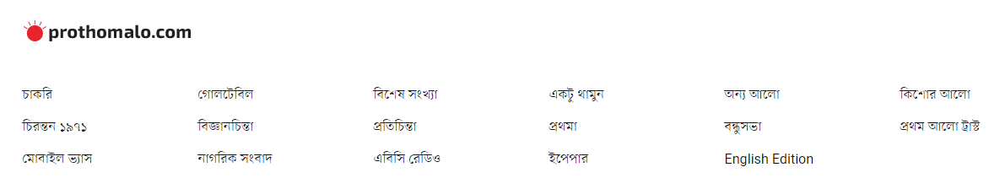

ম্যানচেস্টার ইউনাইটেড তারকা ক্রিস্টিয়ানো রোনালদোছবি: টুইটার
পর্তুগিজ তারকার দুর্ভাগ্য, তেমন কোনো ক্লাবই তাঁর প্রতি আগ্রহী নয়। তাঁর বয়স ও ফর্ম এ ক্ষেত্রে প্রভাবক হয়ে উঠেছে। যদিও ইংলিশ প্রিমিয়ার লিগের গত মৌসুমে ম্যানচেস্টার ইউনাইটেডের হয়ে রোনালদোই সর্বোচ্চ গোল করেছেন (১৮)। এক সময় তাঁর এই গোলসংখ্যাই ৩০–৪০ এর ঘরে থাকত নিয়মিত। এখন তাঁর বয়স, বেতন ও পড়তি ফর্মে তাকিয়ে ক্লাবগুলো মুখ ফিরিয়ে নিচ্ছে
রোনালদো রিয়ালে ফিরতে পারেন—ভক্তরা এই আশা করে থাকলে তা মাথা থেকে সরিয়ে ফেলাই ভালো। রিয়াল সভাপতি পেরেজ বিষয়টি স্পস্ট করে দিয়েছেন।
আরও পড়ুন 